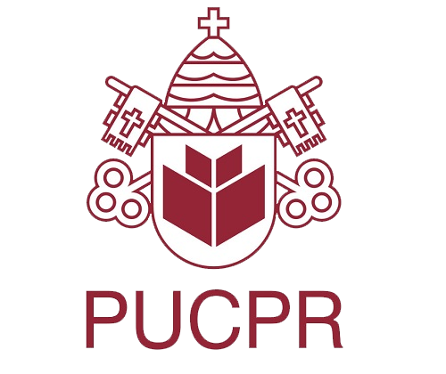

|
O presente site faz parte do Trabalho
Discente Efetivo da disciplina de Experiência Criativa: |

|
Sobre mim
Meu nome é Eduardo Monteiro Verbinen
Bacharelado em Ciência da Computação na PUC-PR - Campus Curitiba
Orientado por:
José Eduardo Lino e Luiz Antônio Pavão

Copyright © 2020 by Eduardo Verbinen